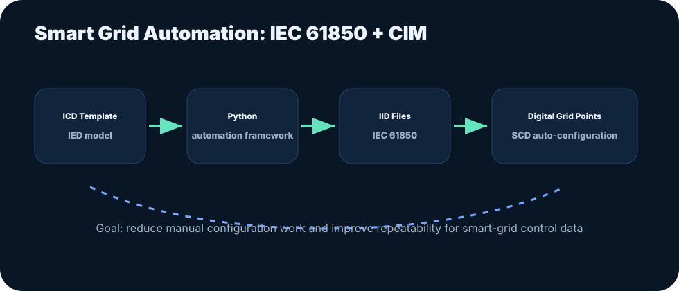

Smart Grid Automation: IEC 61850 / CIM Tooling
Python automation for IID generation, CIMPY migration, digital grid connection points, and household SCD auto-configuration.
Executive summary
This work focused on automation tooling for smart-grid configuration and data exchange standards.
Key activities included upgrading CIMPY from version 2.4 to 3.0 for IEC 61970-301 compatibility and building Python workflows for IID and SCD file generation.
The goal was to reduce manual configuration effort and support scalable digital grid connection point creation.

Full document
Use this slot for the full thesis or project report PDF.
Read project report PDFChecking whether the full PDF has been uploaded...
Problem framing
Smart-grid engineering often involves structured configuration files and standards-heavy data models. Manual creation can be slow, error-prone, and hard to reproduce across many connection points or household configurations.
Engineering approach
- Upgraded CIMPY library usage to support newer CIM standard workflows.
- Developed an automated IID generation framework using an ICD template and IED model.
- Built Python tooling for digital grid connection point generation.
- Automated household .scd file creation from CIM data.
- Designed workflows for easier repeatability and control efficiency.
Outcomes and value
- Reduced manual effort in standards-oriented smart-grid configuration tasks.
- Demonstrated ability to work with power systems, automation standards, and Python tooling.
- Connected electrical engineering fundamentals with software automation and data modeling.
Details for recruiters and collaborators
Technical relevance
- IEC 61850 and IEC 61970/CIM are strong signals for power-system automation roles.
- Python automation experience is transferable to test engineering, validation tooling, and data pipeline development.
Future portfolio asset
- Add a sanitized script or pseudo-code example showing ICD-to-IID generation logic.
How this fits the Kumar Harsh brand
This case study strengthens the central brand message: engineering reliable autonomous systems requires controls knowledge, test discipline, data interpretation, and documentation that can survive technical review.